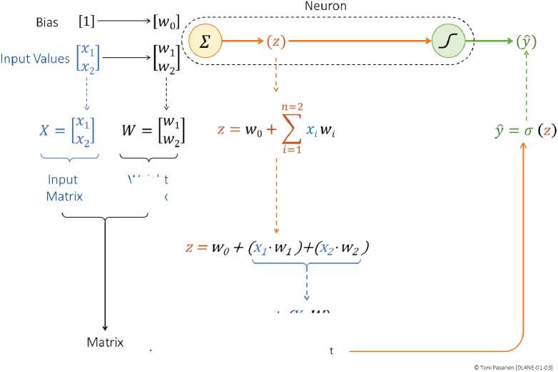
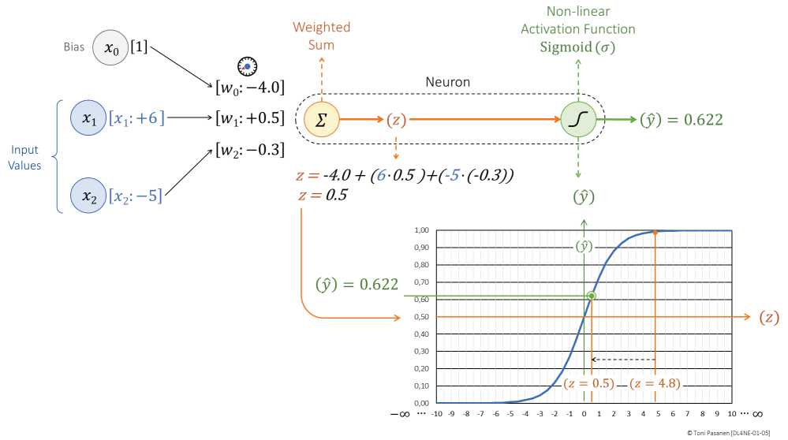

σ(z)=1/(1+e^{-z})，z→-∞ 时 ŷ→0，z→+∞ 时 ŷ→1，z=0 时 ŷ=0.5。好处是输出可解释为概率（比如“拥塞概率 90%”）；坏处是两端梯度≈0，深层网络会“学不动”（饱和），第5章还会回来讲饱和神经元。
ReLU(z)=max(0,z)，z>0 原样通过，z≤0 置零。计算极快，梯度不饱和，深层网络训练更快。缺点是“死神经元”（长期为0）。书 p45 对比两者：浅层演示用 Sigmoid 好讲，深层实战用 ReLU 居多。
Ch1 末尾 Network Impact 点题：即使单个神经元训练，权重、数据、代码都要放 GPU 显存；数据稍大就需要多 GPU，流量随之而来。记住这个伏笔：Ch8 并行策略 + Ch9 RDMA 都是为了解决“模型放不下、数据传不动”。


用一句话对比 Sigmoid vs ReLU，并想一个网络中的“饱和”例子（如 policer 压平）。